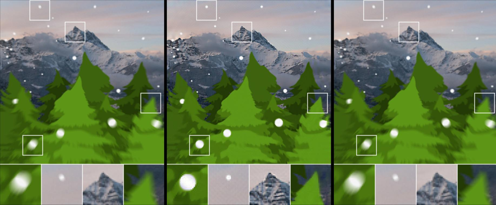
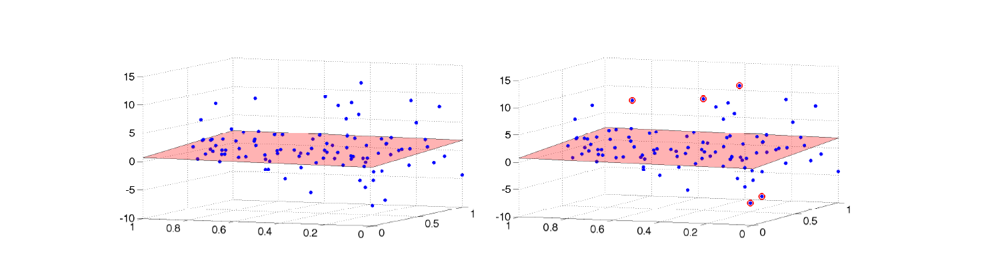
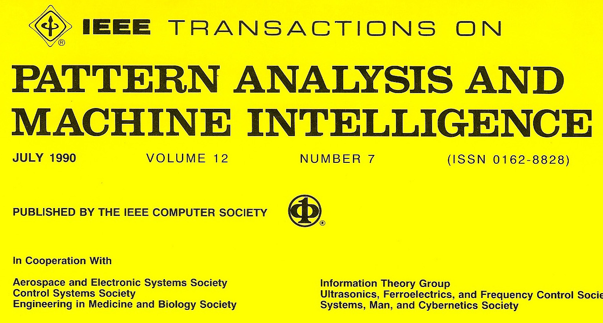
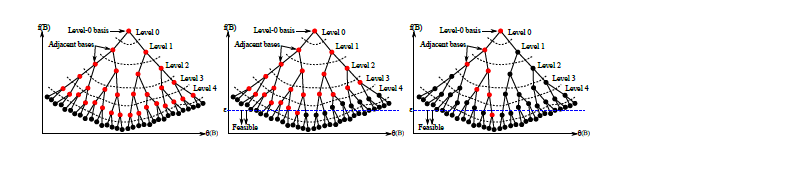

Motion Deblurring for Light Fields,
D. Dansereau, A. Eriksson and Jurgen Leitner,
2nd Workshop on Light Fields for Computer Vision (LF4CV) at CVPR 2017.
D. Dansereau, A. Eriksson and Jurgen Leitner,
2nd Workshop on Light Fields for Computer Vision (LF4CV) at CVPR 2017.
A Consensus-based Approach to Distributed Large-Scale Bundle Adjustment,
A. Eriksson, Bastian J., M. Isaksson and T. Chin,
IEEE Conference on Computer Vision and Pattern Recognition (CVPR), 2016.
A. Eriksson, Bastian J., M. Isaksson and T. Chin,
IEEE Conference on Computer Vision and Pattern Recognition (CVPR), 2016.

Guaranteed Outlier Removal with Mixed Integer Linear Programs,
T. Chin, Y. Kee, A. Eriksson and F. Neumann,
IEEE Conference on Computer Vision and Pattern Recognition (CVPR), 2016.
T. Chin, Y. Kee, A. Eriksson and F. Neumann,
IEEE Conference on Computer Vision and Pattern Recognition (CVPR), 2016.

Fast Rotation Search with Stereographic Projections for 3D Registration,
A. P. Bustos, T. J. Chin, A. Eriksson and H. Li,
IEEE Transactions on Pattern Analysis and Machine Intelligence, 2016.
A. P. Bustos, T. J. Chin, A. Eriksson and H. Li,
IEEE Transactions on Pattern Analysis and Machine Intelligence, 2016.
The k-Support Norm and Convex Envelopes of Cardinality and Rank,
A. Eriksson, T Pham, T-J. Chin and I. Reid,
IEEE Conference on Computer Vision and Pattern Recognition (CVPR), 2015.
A. Eriksson, T Pham, T-J. Chin and I. Reid,
IEEE Conference on Computer Vision and Pattern Recognition (CVPR), 2015.

Efficient Globally Optimal Consensus Maximisation with Tree Search,
T-J. Chin, P. Purkait, A. Eriksson and D. Suter,
IEEE Conference on Computer Vision and Pattern Recognition (CVPR), 2015. [Best Paper Honorable Mention]
T-J. Chin, P. Purkait, A. Eriksson and D. Suter,
IEEE Conference on Computer Vision and Pattern Recognition (CVPR), 2015. [Best Paper Honorable Mention]